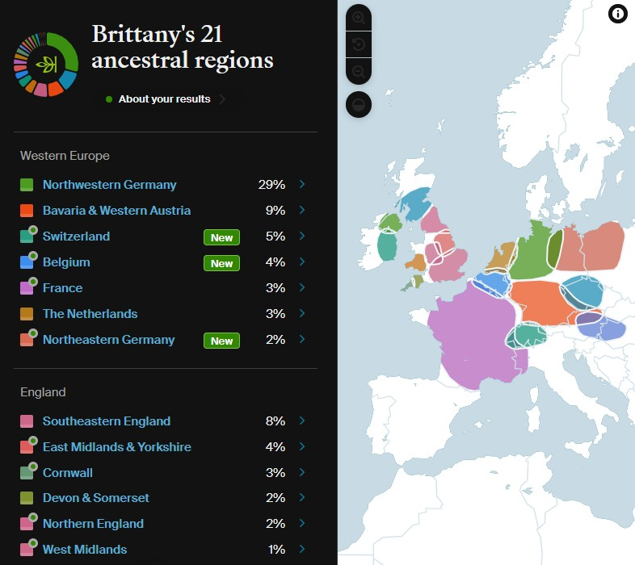
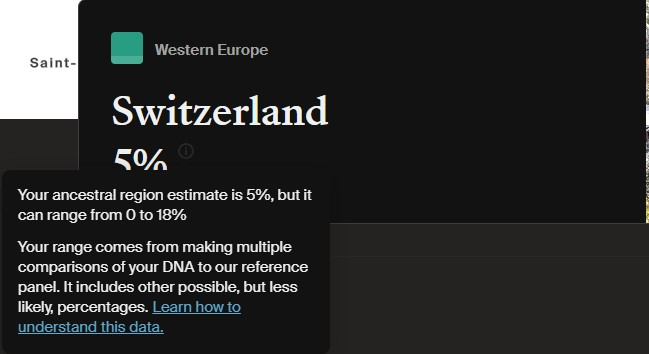
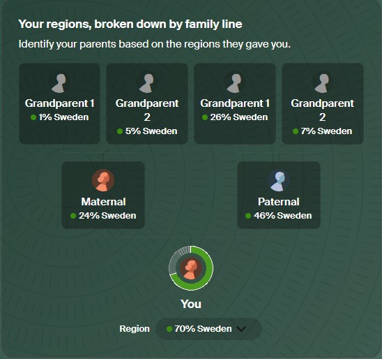
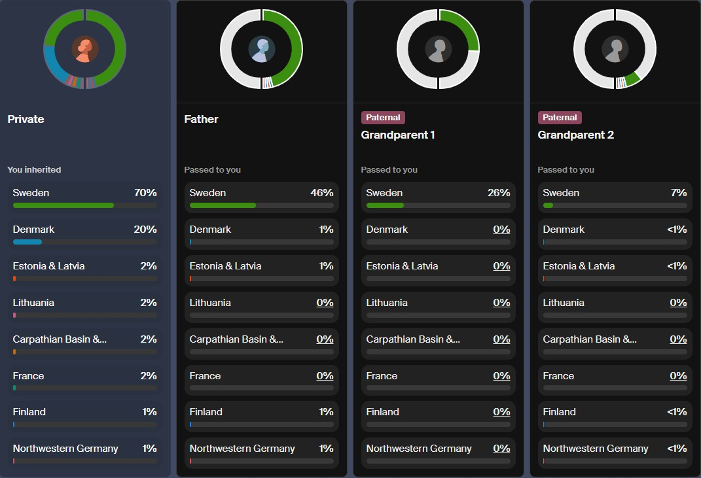
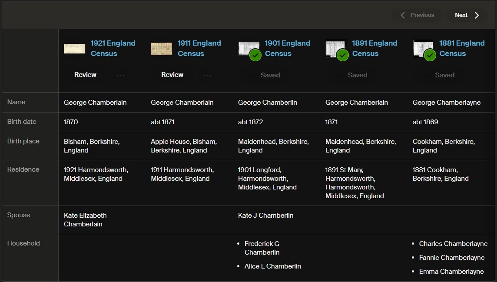

Opened your Ancestry results and found that a familiar region has shrunk, moved or disappeared? I would not start by rewriting the family tree. I would start by asking what has changed in the estimate, and what evidence could help explain it.
Ancestry released its 2026 Ancestral Regions update on 8 October, expanding the regional breakdown and changing how it estimates origins. Its autumn announcements also introduced Regions by Grandparent — the new “DNA by grandparent” view. They answer different questions, so it is worth understanding both.
The distinction to keep in mind: an origins estimate suggests where parts of your DNA may connect geographically. Identifying the people behind those connections is a separate research task. Use the update to ask better questions, not to replace a documented family tree.
What changed in AncestryDNA's 2026 update?
Ancestry compares your DNA with a reference panel: people whose families have long-established roots in particular places. The new assignment method compares your DNA directly with reference-panel individuals, looking for finer distinctions between populations. It reanalyses existing results; you do not need to submit another sample for this update.
The changes are worldwide, rather than an expansion of just one country's results. Here are some of the places where the regional detail has increased.
| Area | What Ancestry has added or refined |
|---|---|
| Mexico | The former Indigenous Americas–Mexico region becomes 14 more detailed regions. |
| Africa | 50 regions, with connections to 93 ethnic groups. |
| India and Pakistan | The regional breakdown increases from 6 to 36 regions. |
| Europe | More detail in Central Europe and the Balkans, and clearer separation of French and French-Canadian ancestry. |
I would treat a more specific label as a useful lead. It gives you somewhere to investigate, but it does not name an ancestor, establish their birthplace or prove membership of a particular cultural community.

Why have my ethnicity percentages changed?
The DNA you inherited has not changed. The comparison data and the method used to interpret it have. Many people will see changed percentages or regional labels, and some smaller assignments may disappear altogether.
Think of an old estimate and a new one as two interpretations of the same evidence, not two different family histories. I would keep a dated copy of both, then note which regions have been renamed, split, increased or reduced. That is more useful than remembering that your results used to look “more Scottish”.
Read the range, not just the headline number
A regional percentage is an estimate, with a range of other possible values. Open the region's details and check that range. If it includes zero, the assignment is uncertain enough that you should not treat the region's presence as established.
For example, a hypothetical 2% result with a range of 0–5% would go in my research notes as a possibility, not as a newly discovered ancestor. I would look for independent support before pursuing a particular family line because of it.

What about British and Irish family trees?
Neighbouring populations can be difficult to distinguish genetically, so a regional label does not necessarily match a documented ancestor's nationality. For a British or Irish tree, I would compare the new breakdown with known birthplaces and family connections rather than expect every percentage to fit a modern border.
If a Cumberland family is well supported by parish registers, certificates and censuses, I would not discard that research because an estimate now describes part of the DNA differently. Equally, I would not dismiss a surprising result altogether. I would write down the question it raises and decide what could actually test it.
DNA by grandparent: what does the new feature show?
Regions by Grandparent is designed to show which ancestral regions you inherited through each of your four grandparents. Neither your parents nor your grandparents need to have taken a DNA test for this view to provide clues.
The feature uses shared DNA with your matches to help separate the portions you inherited through different family branches, then connects those portions with your region estimates. This is an inference from the available DNA evidence, not a separate test of each grandparent.
That is the part I find most useful as a research prompt: instead of asking only “Where might this region come from?”, you can begin asking “Which branch should I investigate?” The second question is much easier to turn into a focused piece of genealogy.
Where to find Regions by Grandparent
Open DNA → Origins → By parent → View regions by parent and grandparent. Select the correct test first if you manage more than one person's results.

It is not your grandparent's complete DNA profile
You inherited only part of each grandparent's DNA. Their own results could therefore include regions that never reached you. Nor does inheritance produce an exact quarter from every grandparent: the proportions vary, even though each parent supplies half of your autosomal DNA.
Keep the question narrow: “What does this suggest about the DNA I inherited through this branch?” is different from “What was my grandmother's entire ancestry?” I would not multiply the displayed figures to try to reconstruct her full results.
Uneven totals and gaps do not automatically mean a problem
Rounding and very small results below 1% can affect the totals. Some DNA may remain unassigned to a grandparent branch if there are too few useful matches or the available matches are too distant.
I would record any unassigned portions alongside the assigned results. Leaving uncertainty visible is much better than forcing every part of the chart into a neat story.

Check the family labels before building a theory
Parent 1 does not automatically mean your mother, and Parent 2 does not automatically mean your father. Use a recognised DNA match to work out which side is which. A known maternal aunt, for example, can help establish which parent label is maternal.
My next step would be to compare the suggested branches with relatives whose connections are already documented. I would keep a grandparent identification provisional where the evidence is thin, especially if both sides of the family come from similar places. A familiar region is not enough to attach a person's name with confidence.
How I would turn the update into useful research
Before opening another tab, choose one question. Perhaps you want to understand an unexpected region, identify the family behind a group of matches, or investigate an unknown grandparent. “Find out everything about my DNA” is much harder to make progress on.
Keep regions, journeys and matches separate
Regions compare your DNA with reference populations. Journeys describe more recent ancestral connections and movements, generally within the last 300 years. They are related views of your origins, not interchangeable results.
Matches are the people with whom you share DNA. In a search for a named ancestor, my priority would be understanding those connections and the records behind them, rather than choosing a candidate who happens to come from the right region.
- Save a dated starting point. Record the regions, percentages, ranges and any grandparent assignments relevant to your question. Add a note explaining what surprised you. A screenshot is useful; a short written explanation of why you saved it is even better.
- Check what you already know. Write down the evidence for each grandparent's identity and birthplace. Distinguish a certificate or original register entry from an unsourced family-tree claim. My beginner's family-tree guide explains that process.
- Choose a small, useful group of matches. Start with known relatives and matches whose trees can be investigated. Review shared matches where available and note the amounts of shared DNA. Keep your attention on the matches you can confidently investigate.
- Build the connections, not just a surname list. Investigate how those matches descend from their ancestors. Look for a common couple, places and dates that fit, and records connecting each generation. Keep an alternative explanation in your notes until you have tested it.
- Choose the next piece of evidence. That might be a marriage certificate, a census household, a probate record or a carefully worded message to a match. End with a specific action that could strengthen or weaken your theory, rather than another round of percentage comparisons.
An illustrative example — not a client case
A region points towards a branch, not a named grandfather
Imagine that your paternal grandfather is unknown and a surprising region appears on one grandparent branch. I would not begin by searching for every man born in that region.
I would first establish the paternal side using known matches. Next, I would investigate the family connections of a small group of relevant matches and compare their trees with the family of the known paternal grandmother. If a different ancestral couple emerged, I would research their descendants and ask which relationships fit the dates and circumstances.
The region might support a direction of enquiry, but the case would need to stand on the match evidence and the documentary links. Several plausible relatives could share the same regional background. Until they are distinguished, a named grandfather remains a hypothesis.
For a question like this, the unknown-parentage research service explains how a project can be approached sensitively. For wider match analysis, see DNA genealogy research and the guide to GEDmatch's redesigned interface.
Other autumn features worth exploring
The October DNA origins update is part of a wider set of autumn 2026 changes. Alongside the new regional detail and Regions by Grandparent, several family-tree tools offer useful ways to organise and compare evidence.
Census Compare: follow a household through time
Census Compare brings census entries for one person into a side-by-side view, making changes across the years easier to spot. It works with suitable census entries linked to your tree, including UK and US records.
I would use it to investigate changes in household members, occupations and reported birthplaces. Then I would open the original images. A convenient comparison is a finding aid, not a reason to overlook a mistranscription or attach the wrong household.

Tree Compare: useful differences, not automatic proof
Tree Compare lets you view your tree alongside another member's public tree and see similarities and differences. I would use a disagreement as a research question: what source supports each version? Two trees repeating the same unsupported parent are not two independent pieces of evidence.
Photo Insights: clues to follow up
Ancestry also highlighted Photo Insights for details such as military rank and period. I would treat suggestions as leads to check against the original photograph, service records and other reliable references, rather than as a confirmed identification.
Common questions about the update
Do I need another DNA test to get the 2026 update?
No. The 2026 origins update reanalyses your existing AncestryDNA results, so no new DNA sample is needed.
Why do my sibling's results look different?
Except for identical twins, siblings do not inherit exactly the same DNA from their parents. Different regional results can therefore occur within the same family. I would not draw a conclusion about a family relationship from percentages alone.
Can DNA by grandparent identify an unknown grandparent?
Not on its own. A suggested branch can help frame the investigation, but it is not a named identification. I would still need to examine the matches, reconstruct relevant families and test the documentary evidence before reaching a conclusion.
Professional DNA and family-history research
Has the update left you with a question about your own family?
A new region can be interesting. Understanding how it connects to real people is usually the more rewarding part. I combine DNA match analysis with family-tree reconstruction and historical records to investigate uncertain family lines, unknown parentage and difficult brick walls.
Tell me which family line or relationship you are trying to understand, which testing platform you used and what you have already found. I will explain what the evidence may allow and suggest an appropriate research scope. No particular outcome can be guaranteed.
Discuss Your DNA ResearchA brief outline is enough for a first enquiry. Please do not send account passwords or raw DNA files through the contact form.